Para acceder a la opción Pago a proveedores , se debe ingresar a la plataforma de Pagos Electrónicos desde la página https://www.itau.com.py/
Ingresando el número de RUC de la empresa con el guion, el número de documento y la contraseña operador.
Una vez que se haya ingresado, se podrá visualizar la opcion pago a proveedores en el menú.
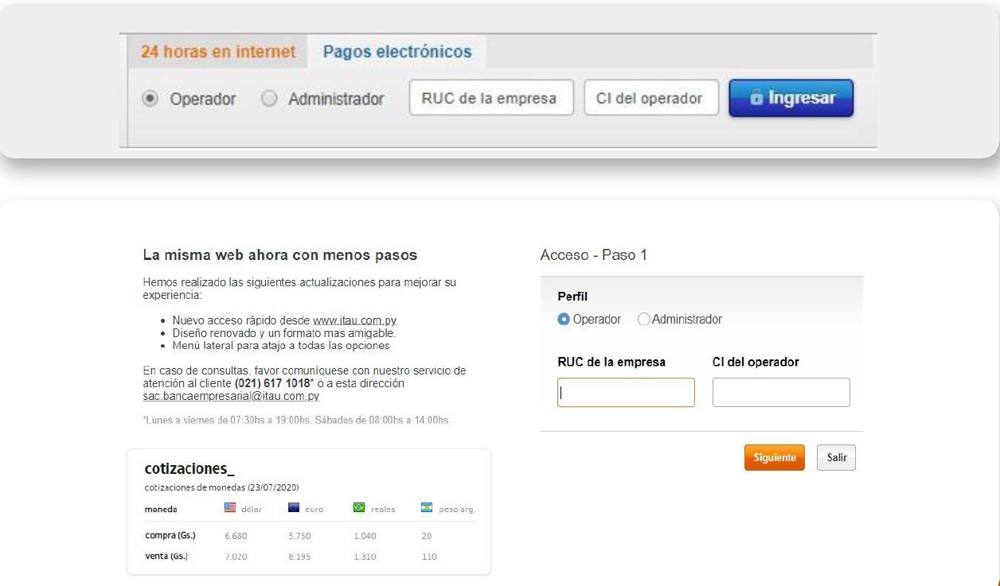
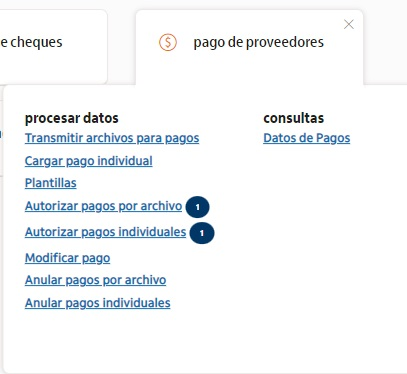
Para Transmitir pagos adjunte el archivo a transferir, agregue una referencia (campo opcional) y luego click en Enviar archivo
Los pagos con errores quedaran pendiente en la grilla de autorizaciones hasta que el operador lo modifique o anule.
Recuerde:Tiene la posibilidad de descargar el Excel (ejemplo) y el formato txt en esta opción de ayuda.
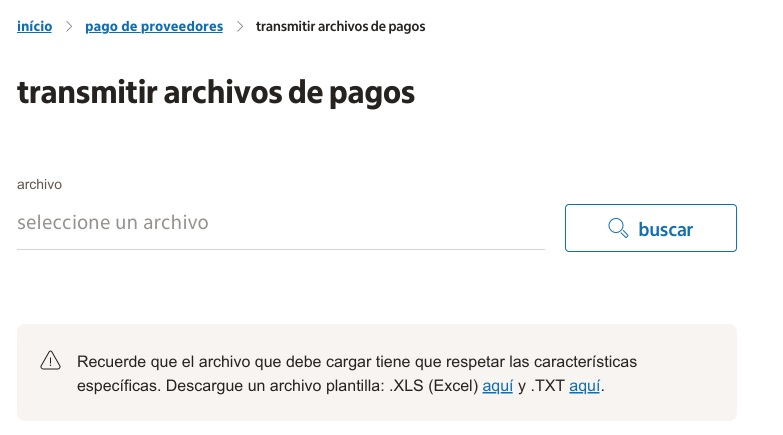
En el caso de que se adjunte un archivo que no sea del formato permitido aparecerá el siguiente mensaje.
El archivo seleccionado no es permitido, solo permitidos archivos XLS y TXT
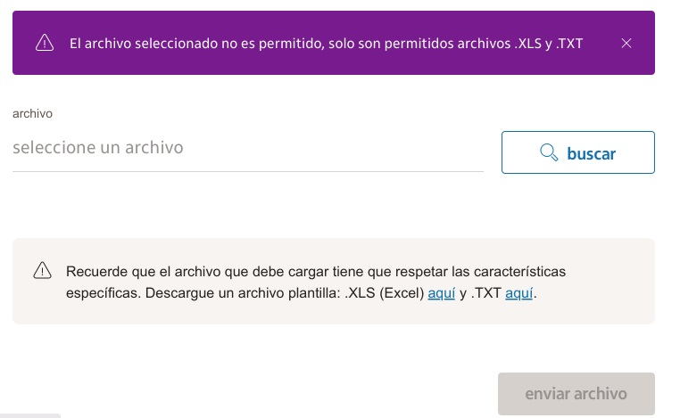
Si el archivo transmitido cuenta con errores en la estructura de los datos se mostrara el siguiente mensaje:
Tienes, pagos con error, se habilita el botón “Ver Errores” para verificar los pagos ingresados con error.
Favor realizar la modificación para transmitir el archivo completo.
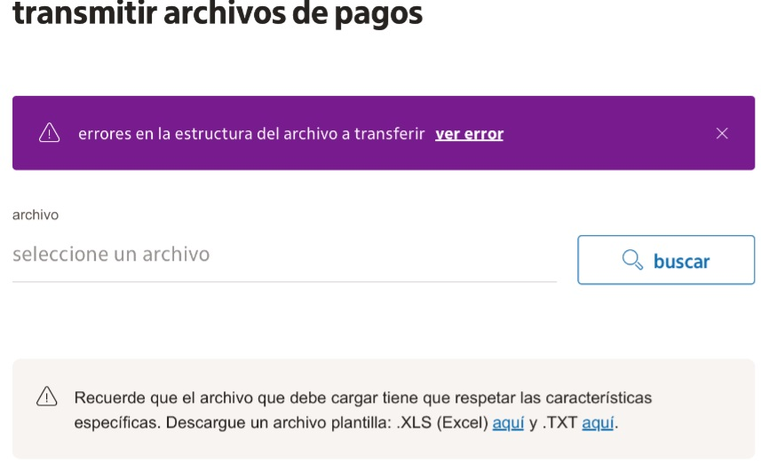
Para realizar una Carga individual:
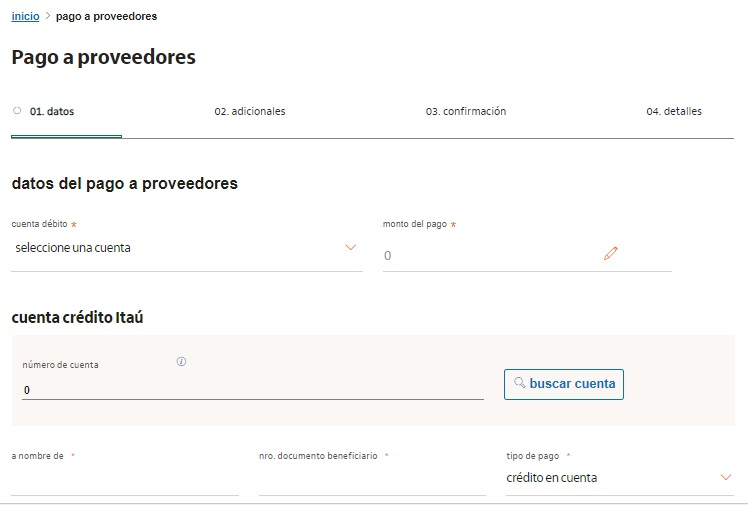
Para este paso todos los campos son opcionales
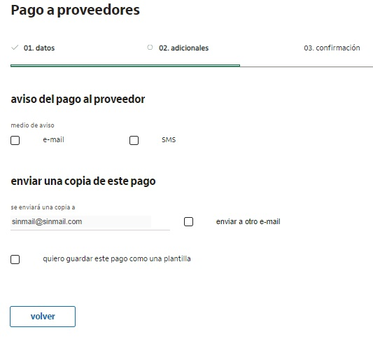
Luego de finalizar la carga de datos, se podrá visualizar en pantalla el resumen del pago y el mensaje de confirmación.
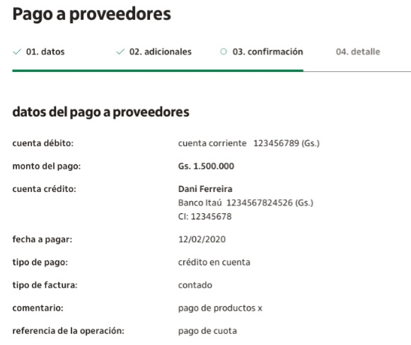
En caso de tener los permisos de autorización, aparecerá un acceso directo que le llevara a autorizar el pago.
Disponible para los usuarios que tengan el permiso de Autorizar pagos.
El operador vera el nro de transacciones a autorizar.
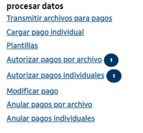
Se podrá visualizar el Resumen total de archivos transmitidos.
Ej. Monto total y cantidad de pagos contenidos en el lote.
Ver mas
Si selecciona esta opcion le desplegará los pagos que contiene el lote.
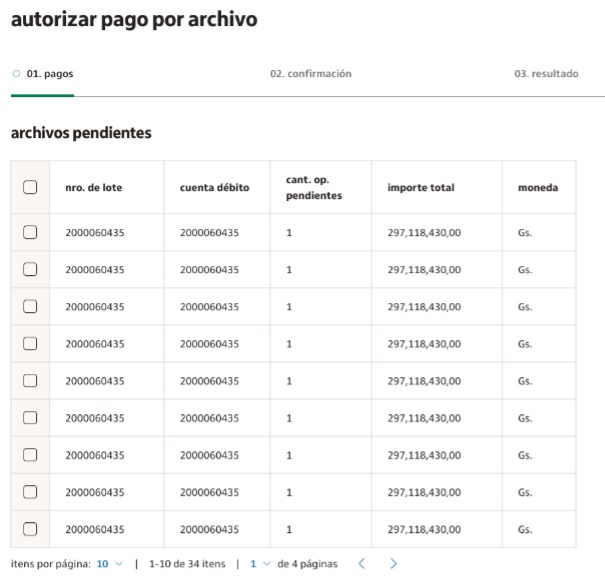
Visualiza el detalle de cada de unos de los registros transmitidos en el lote.
Contará con la Opción de Ordenar los registros pendientes por Cta. Debito, Cta. Crédito, Monto pago y Beneficiario.
Solo debe posicionar el cursor sobre el titulo de la columna a ordenar.
El ordenamiento se realiza por paginas al seleccionar el selector para (Marcar/desmarcar): permite seleccionar todos los registros pendientes de autorización.
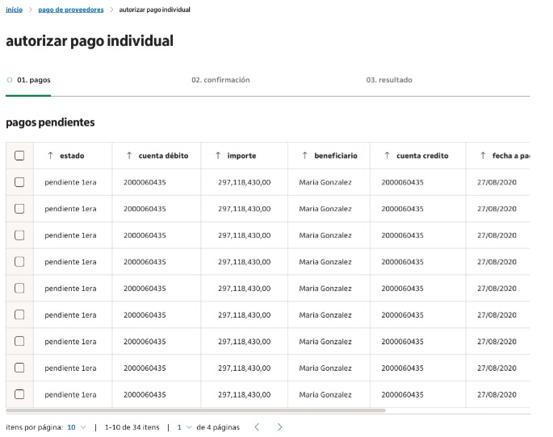
Permite anular los registros / pagos individuales completos de pagos que aún no fueron procesados.
Para proceder a la anulación de algún archivo, se deberá seleccionar el mismo de modo a avanzar con la confirmación de dicha gestión.
Permite anular los lores completos de pagos que aún no fueron procesados.
Para proceder a la anulación de algún archivo, se deberá seleccionar el mismo de modo a avanzar con la confirmación de dicha gestión.
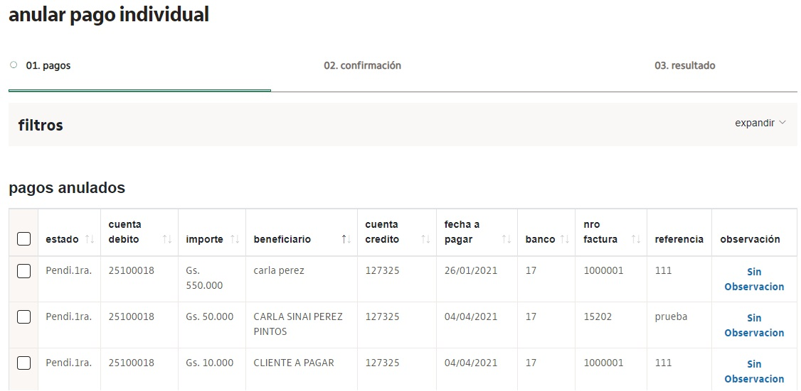
Sepodrá utilizar la opción de filtros, donde podrá filtrar por:
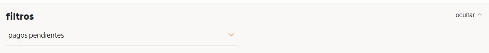
Permite modificar las instrucciones de pagos pendientes de autorización.
Las modificaciones ingresadas requerirán nuevamente la autorización de los operadores con permisos.
Seleccione un filtro de búsqueda, ya sea por fecha, por estados, por rango de fecha.
Click en el botón Consultar
Vea la pantalla de resultado con el detalle de los pagos.
Seleccione el pago que desee modificar haciendo click sobre la imagen del lápiz, luego presionar el botón "Guardar".
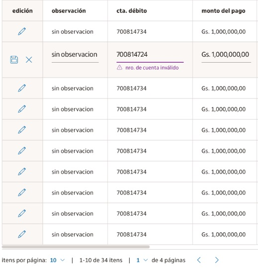
Para conciliaciones, histórico y estados de sus pagos ingresados
Podrá Seleccionar las opciones de filtros de búsqueda, por fecha de carga, por rango, por estado, Click en el botón CONSULTAR
Seleccione un filtro de búsqueda, ya sea por fecha, por estados, por rango de fecha.
Las operaciones consultadas pueden ser exportadas en Excel y PDF
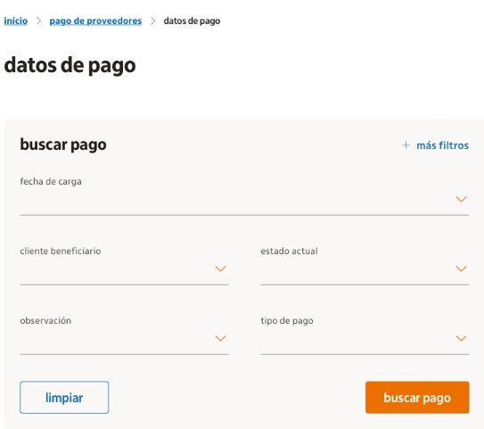
Podrá realizar verificación de datos para conciliaciones, histórico y estados de sus pagos ingresados.
Visualizará el log de auditoria de pagos desde el botón VER
En la columna Observación: Visualizará el motivo de rechazo u error de su registro de pago.
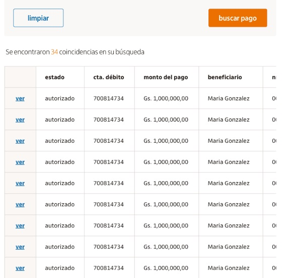
(*)Auditoria de la operación: detalles de visualización.
(*)Nueva opción disponible.
OBS: El detalle de la carga, se visualizará para todas las operaciones registradas
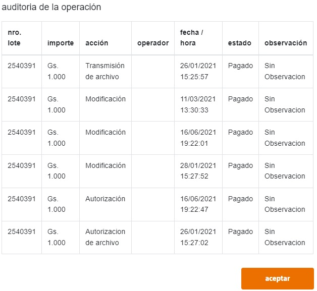
Se indica a cliente si existen pagos a su nombre y en qué estado, ingresando desde SAC.com a la ficha de la empresa que le paga.
Cliente consulta estado de pago a proveedores, se debe consultar que entidad (empresa) paga y a nombre de quien emite el pago (beneficiario, puede ser PF o PJ)
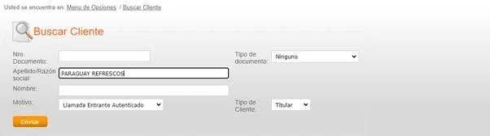
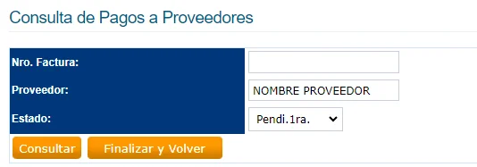
Identificar si se trata de acreditación en Cta. por Crédito o Contado.
Buscar en estado Autorizado:
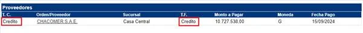
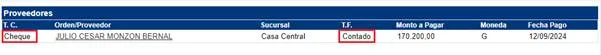
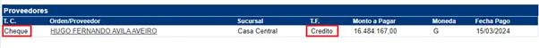
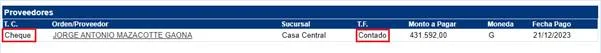
Importante: No gestionamos traslado de cheques a sucursales. El cliente debe confirmar directamente con la entidad pagadora.